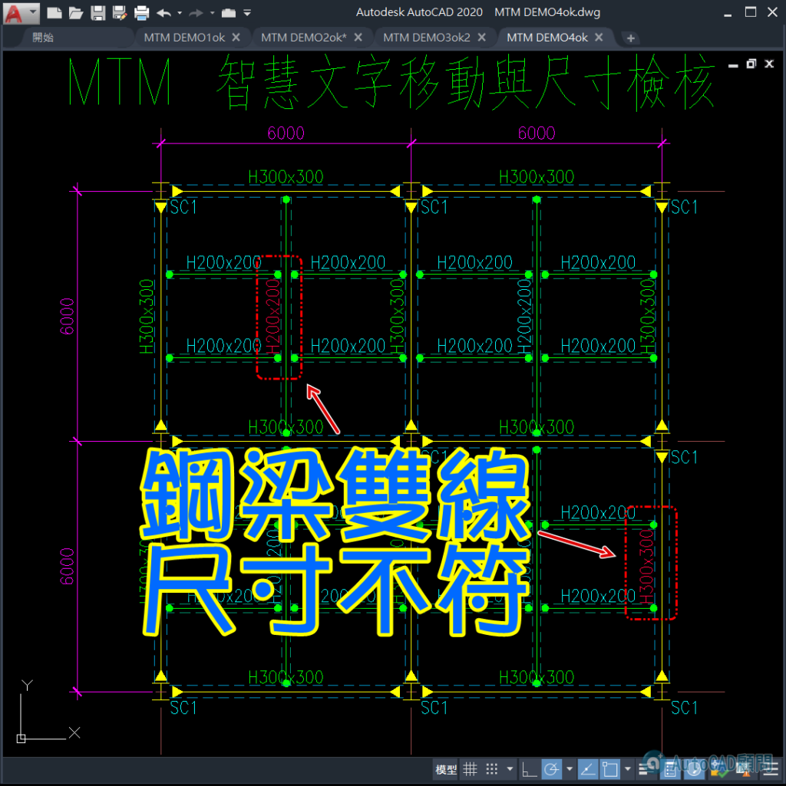
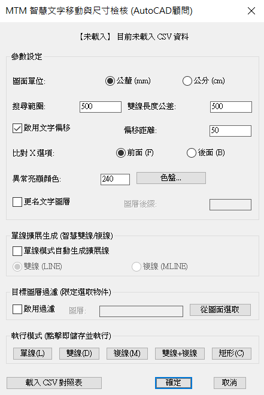

除了手動作業一個一個檢查
現在有其他選擇可以快速搞定
快來瞧瞧😙

#autolisp #自動化工作 #autocad #gemini
RC 結構圖畫完，最怕樑編號跟現場寬度對不起來？😨
人工對圖對到眼花，還可能看錯行？
這招一定要學起來！使用 MTM 指令：
✅ 一鍵匯入 CSV：自動關聯梁編號與標準尺寸。
✅ 智慧對齊：文字自動偏移定位，圖面超整潔。
✅ 顏色亮顯：寬度不符、查無編號？程式直接「變色」警告。
✅ 單線變雙線：抓完尺寸直接生成 S-DOUBLE-BEAM 圖層！
別再用肉眼校對了，讓 AI 與自動化 LISP 幫你省下 90% 的對圖時間！
還在手動 Offset 鋼梁雙線嗎？改個尺寸又要重畫？😨
這套 MTM 智慧指令 讓鋼構平面圖作業進入自動化時代！
內建「射線碰撞邏輯」：
✅ 自動查表：匯入 CSV，程式自動根據梁編號（如 G1, B2）抓取寬度。
✅ 柱邊貼齊：智慧偵測柱邊界，自動計算縮排，梁線不重疊、不穿幫。
✅ 單線擴展：一鍵選取單線，立刻生成標準 S-DOUBLE-BEAM 或複線。
✅ 異常檢核：尺寸對不上的編號自動變色，一眼抓出設計圖漏洞。
從單線草圖到正式施工圖，就是這麼快！🚀
代碼:
============================================================
開發者：AutoCAD顧問 (www.autocad-tw.com)
============================================================
1. 指令說明：
------------------------------------------------------------
MTM : 開啟主設定面板 (DCL)，可調整單位、搜尋範圍、更名圖層及模式切換。
2. 核心功能亮點：
------------------------------------------------------------
[CSV 自動化] : 匯入 CSV 對照表，程式自動關聯「梁編號」與「標準寬度」。
[智慧對齊] : 標註文字自動移動至梁中心上方，並自動旋轉至平行角度。
[異常亮顯] : 實測寬度與標註/CSV不符時，物件自動變為「亮紫色 (240色)」。
[射線檢測] : 單線生成雙線時，自動偵測柱位邊界，梁端點精準貼齊不穿幫。
[圖層管理] : 自動將生成的雙線派發至大梁、小梁或斜撐對應圖層。
3. 操作流程 (單線模式/鋼構模式)：
------------------------------------------------------------
步驟 A：輸入 MTM，設定「圖面單位」(mm/cm)。
步驟 B：點擊「載入 CSV」，選取您的尺寸對照表。
步驟 C：若要生成雙線，勾選「單線模式自動生成擴展線」。
步驟 D：點擊「單線(L)」或「複線(M)」執行：
1. 根據提示先選取「柱子」物件 (支援圖塊、聚合線)。
2. 再選取「梁中心線」(LINE)。
步驟 E：完成！檢視圖面是否有 240 色的異常物件。
4. CSV 格式規範 (範例)：
------------------------------------------------------------
請將 Excel 另存為 CSV (逗號分隔)，格式如下：
----------------------
編號 , 尺寸
G1 , 40X80
G2~G5 , 50X90
B1(S1) , 30X60
----------------------
* 支援 ~ 範圍連號、支援括號內編號解析。
5. 系統變數連動：
------------------------------------------------------------
搜尋範圍 : 控制文字離梁多遠會被抓取 (mm/cm 隨單位連動)。
偏移距離 : 文字生成後離梁邊緣的間距。
圖層過濾 : 可限定程式只處理特定圖層的物件，避免誤抓。
============================================================
AutoCAD顧問 專業結構自動化解決方案
更多資訊：https://www.autocad-tw.com
============================================================
👉 加入贊助A即可取得：
https://www.autocad-tw.com/t2715-topic
👇[贊助A分享]MTM 智慧文字移動及尺寸編號檢核_程式下載